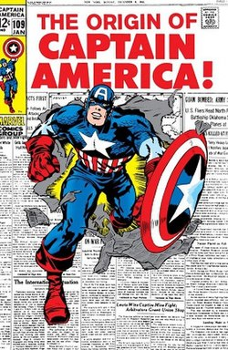

Captain America is a superhero appearing in American comic books published by Marvel Comics.

Created by cartoonists Joe Simon and Jack Kirby, the character first appeared in Captain America Comics #1 (cover dated March 1941) from Timely Comics, a predecessor of Marvel Comics. Captain America was designed as a patriotic supersoldier who often fought the Axis powers of World War II and was Timely Comics' most popular character during the wartime period. The popularity of superheroes waned following the war, and the Captain America comic book was discontinued in 1950, with a short-lived revival in 1953. Since Marvel Comics revived the character in 1964, Captain America has remained in publication.